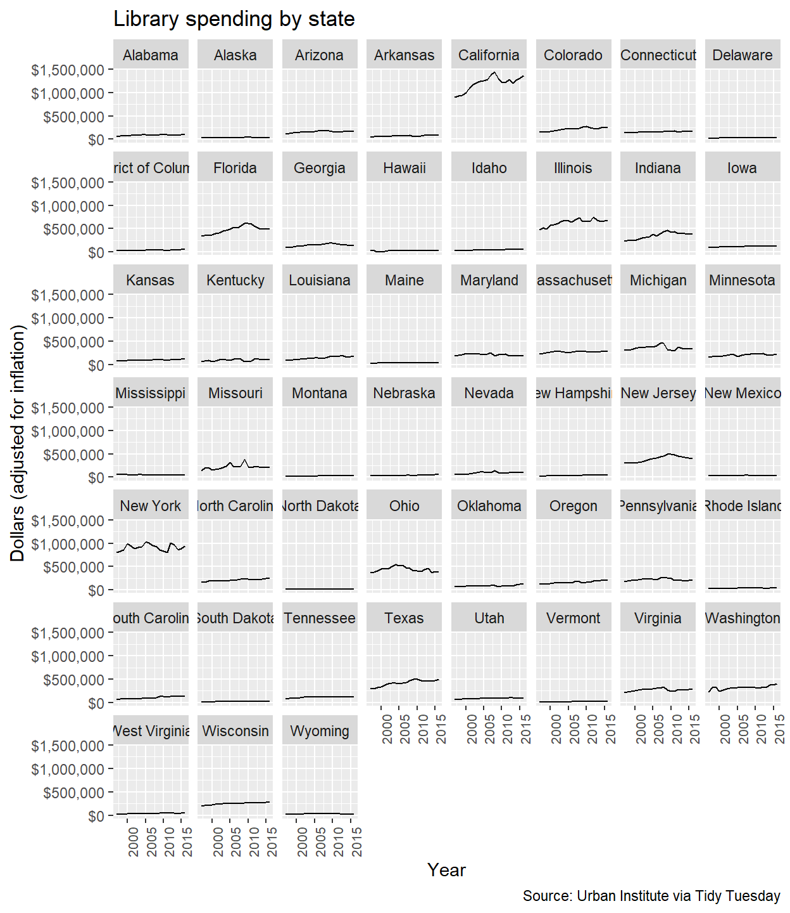
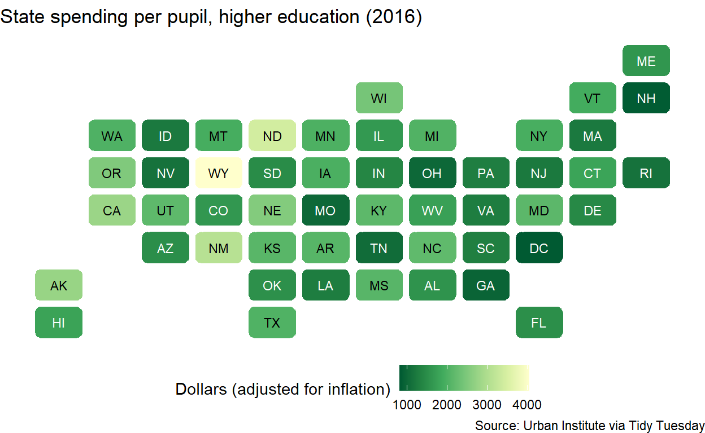
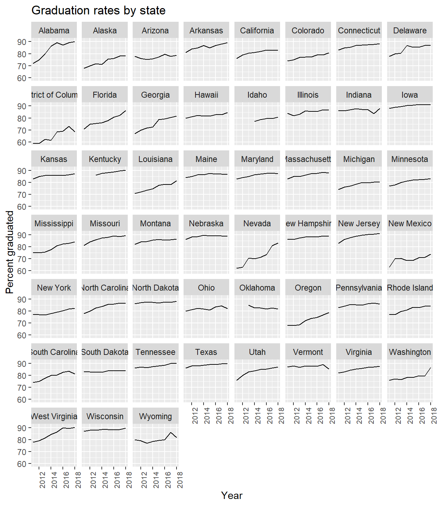
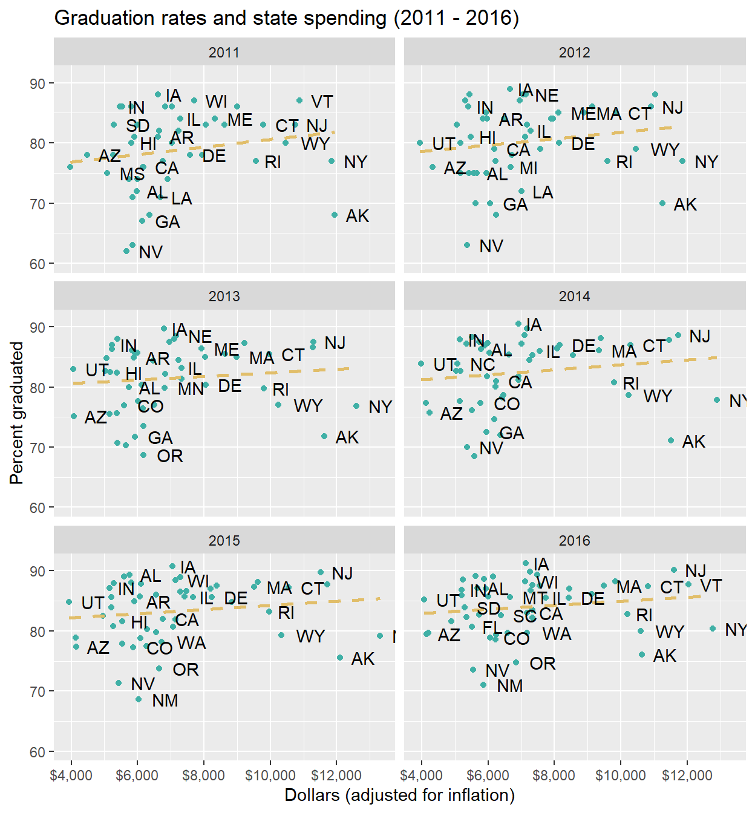

About
From the Tidy Tuesday repo:
A weekly data project aimed at the R ecosystem. As this project was borne out of the R4DS Online Learning Community and the R for Data Science textbook, an emphasis was placed on understanding how to summarize and arrange data to make meaningful charts with {ggplot2}, {tidyr}, {dplyr}, and other tools in the {tidyverse} ecosystem.
Every week we post a raw dataset, a chart or article related to that dataset, and ask you to explore the data. While the dataset will be “tamed”, it will not always be tidy! As such you might need to apply various R for Data Science techniques to wrangle the data into a true tidy format. The goal of TidyTuesday is to apply your R skills, get feedback, explore other’s work, and connect with the greater #RStats community! As such we encourage everyone of all skills to participate!
Although I haven’t participated in many Tidy Tuesday weeks, it has been a great resource for practicing R and data analysis/wrangling/visualization skills. I’ve also found the #rstats community on Twitter very welcoming and helpful to everyone. I highly recommend playing with datasets or just scrolling through the Tidy Tuesday submissions for inspiration.
Around this time last year, the Tidy Tuesday dataset was about US education spending. The dataset comes from the Urban Institute and has tracked a number of variables such as SNAP spending, public spending on libraries and parks and recreation, and others from 1997 to 2018.
Exploration
At the time I was quite excited to make a choropleth map (I still am). I even made it animate! This map is pretty simple; it shows that state spending per pupil (adjusted for inflation) has steadily increased across all states over the past decade. Lighter colors - greens and yellows - indicate higher levels of spending per pupil.
I recently went back to this dataset and played around some more with other variables and other chart types. Here is the trend over time in spending on libraries by state. If we assume that more $$ = better libraries, then California, Illinois, and New York seem like good places for book lovers. But, since we don’t know how many libraries are in each state, or how the money is allocated, this might not be true.

I looked at one year, 2016, and made a map using a package called {statebins} to create a cool looking map which shows state spending on higher education. Lighter colors indicate higher spending per pupil.

Spending and Achievement
This was all well and fun but what does one do with this data besides make some pretty-ish maps? I was curious about the relationship between state spending on education and student achievement. If states spend more per pupil, does that translate to higher student outcomes?
I used graduation rates from the National Center on Education Statistics as a proxy of achievement. They have data from the 2010-2011 school year through 2017-2018 school year. These graphs by year show that graduation rates were climbing across the board during all seven years. If you go back to my first map, you’ll remember that spending on education has also increased over time. Are the two trends related?

I merged together these two datasets for 2011 to 2016, since these are the years I have data for both spending and graduation rates. The following series of graphs show how spending is related to graduation rates for each state. The dashed line is the linear relationship between the two, while the dots indicate the individual states. While in general, more state spending is associated with higher graduation rates, there are several states that don’t follow this pattern. For example, Alaska spends a lot per student, but has low graduation rates. But Utah has lower expenditures, and high graduation rates.
I’d like to point out that this is a very simplistic model. It predicts student outcomes based on only one variable, state spending. As many of us know, states vary greatly in terms of student diversity, budgets, number of teachers and many other factors which may impact student outcomes. This model doesn’t account for any of those variations, so the interpretation is quite limited in scope, too.

You might be thinking, “changing spending doesn’t really change graduation rates.” When we look at the dotted line, that definitely seems to be the message. A jump in spending, like from $4,000 per pupil to $6,000 per pupil is associated with a small percentage point change in graduation rates. But to be clear,
I am not endorsing a reduction in state spending on education.
The Learning Policy Institute, an education policy and research organization, developed a report summarizing research which definitively shows that money matters. It finds that on average, across contexts, increased investment in education led to higher student outcomes.
The LPI report and other studies (see More Readings, below) find that how and where money is spent is important to increasing student outcomes. Investing in high quality teachers, focusing on disadvantaged students (such as low-income, English language learners or students with special needs), and investing in Pre-K education are promising candidates for improving students’ learning.
In future posts, I’d like to look more closely at specific states which have lower than average spending per pupil AND high graduation rates. With this kind of information, we might be able to glean more insights into what kind of spending translates to higher outcomes and assess if these practices could be effective elsewhere.
More Readings
Can More Money Fix America’s Schools? from NPR
Why money matters for improving education from Brookings
The Costs of Cutting School Spending from Education Next